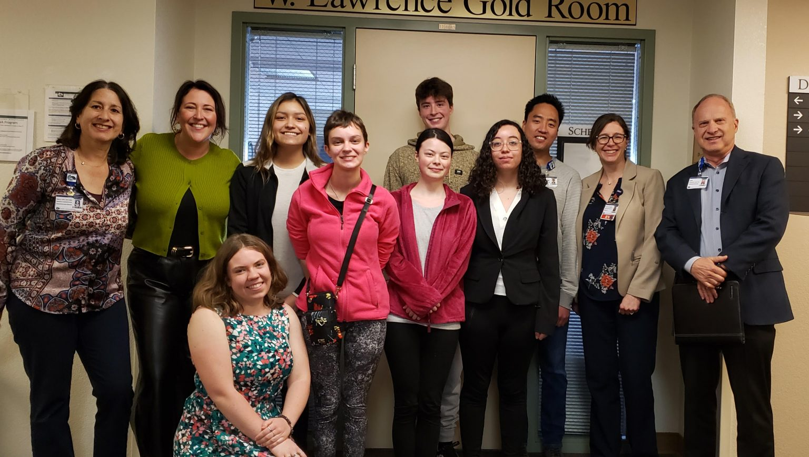
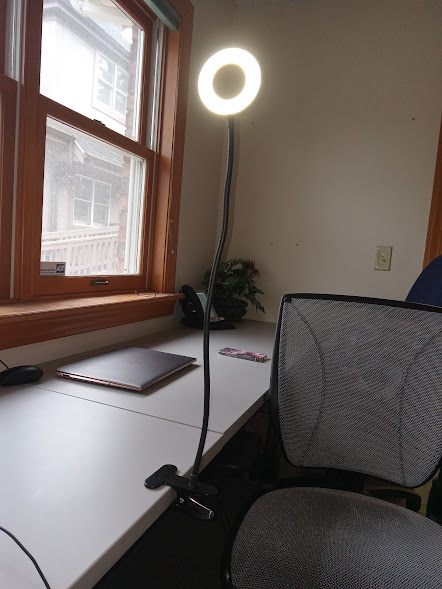
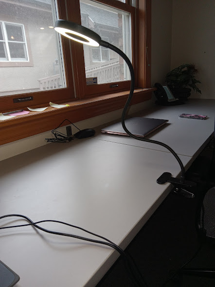
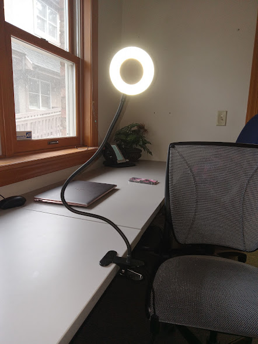
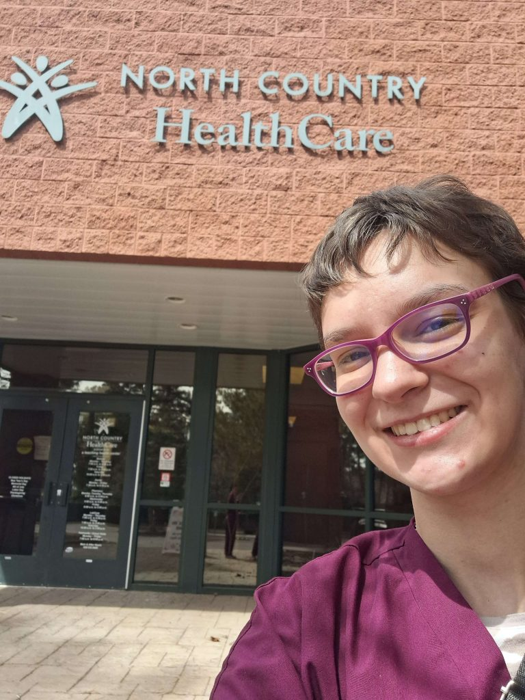
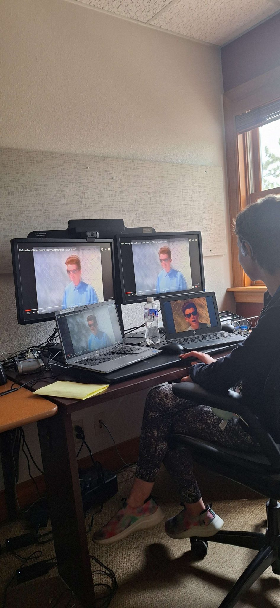
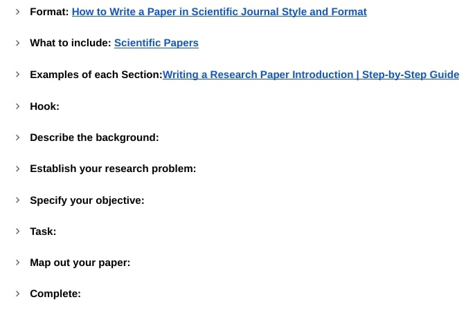

Trauma victims can bleed out in minutes, often before an ambulance arrives. After the uptick in U.S. mass shootings, programs like “Stop the Bleed” were created across the country, based on military tourniquet techniques. Such programs ensure that bystanders are trained to be able to stop bleeding when emergency personnel may take too long. Despite widespread training program installation, prior research reveals challenges in bystander efficacy during emergencies. I aim to build on that research and specifically work on implementing the improvements in my own city of Flagstaff. Because of my focus on “Stop the Bleed” programs in Flagstaff, I have decided to collaborate with the team at Northern Arizona Healthcare Trauma center who has a team currently providing training all across Flagstaff. This will ensure me direct access to resources and will aid in implementing research findings for immediate impact. I will also be partnering with my peer Sarah W., which allows us to broaden our goals; she'll handle survey design and distribution as an intern, while I focus on analysis and research. My research aims to identify obstacles and propose enhancements for program effectiveness based on the results of her survey. We have chosen surveys as our method of research as it will reach a large audience of trained and prospective individuals during our research period. Overall, I aim to identify ways training programs have fallen short in reaching their audience and contribute to a revised program, ensuring that bystanders feel prepared and confident in addressing emergencies.
Contents
Let’s Stop The Bleed: Introductory Post: February 21st
February 21, 2024 12:00 pm
Hello!
For the next 10 weeks I will be researching the efficacy of Stop the Bleed Training programs in Northern Arizona using survey data. Stop the Bleed Training Programs are bystander-focused quick training programs focused on teaching how to use a tourniquet, apply pressure, and pack a wound. I will be working together with BASIS senior Sarah W, my internal advisor: Trent M: Head of Operations, as well as numerous on-site advisors at Northern Arizona Healthcare: Shawn B: Injury Prevention/Outreach Coordinator, Paula G: IRB Administrator, Floye B: Director of Quality, Sedona S: Public Health Intern. We are researching the efficacy of Stop the Bleed Training programs in Northern Arizona using survey data.
But first, a little about me:
My name is Kei S. and I’m a senior at Basis Flagstaff. I’ve been interested in the medical field for as long as I can remember and I’ve always wanted to go into diagnostic medicine. However, when Northern Arizona Healthcare reached out to our school about a project on Trauma and Emergency Medicine, I became fascinated with the emergency medicine side of things. I hope this project will serve me well to get a proper insight into the research side of medicine.
About my project:
I will work together with Sarah to see the efficacy and retention rate of Stop the Bleed training programs throughout Flagstaff. These programs are designed for bystanders to be able to provide basic emergency care till EMS is able to arrive. Sarah W. will be working as an intern for her Senior Project and is focusing more on survey design and analyzing how to make an effective survey. She will be learning on-site how to create a survey that will provide us with the most helpful information. I will primarily be using that survey data to analyze how these training programs can be made more effective and help with retention rates.
Why is this so important to study?:
Throughout my talks with my on-site advisors and through literature review I have recognized the importance of bystander training: Trauma victims can bleed out in less than 5 minutes, while an ambulance takes an average of 7 minutes to arrive on-scene. Prior research shows that while training programs are designed well, there is a lack of proper retention and understanding post-training. I aim to provide the hospital with the resources to help close the knowledge gap. Time-dependent I hope to provide supplementary educational materials that the hospital can use in their program.
Extra information:
If you’re interested in learning more about what to expect during my project, here is a link to my Research Proposal: Senior Project Proposal Link
[Some information has been redacted for privacy]
Glimpse into our first day on campus:

BASIS Hospital Researchers with
Dave Cheney, President and CEO
Jake Lansburg, VP Care Transformation and Quality
Paula McAllister, Research Administrator
Floye Bradford, Director Quality
Alex Cohen-Gray, College Counselor
Image by NAH | Used with permission
Overall I’m really excited to be working in collaboration with so many people at the hospital! Can’t wait to update you on my first week!.
With green eggs and ham,
-Kei
PS: Take a look at the Northern Arizona Healthcare website as well as the Stop the Bleed Flagstaff website.
Here’s a bit of an overview of what I’ve been doing this first week:
Me and my fellow hospital project friends (Aiyana, Delaney, Nathan, Sarah, and Sedona) had an introductory meeting with most of the hospital personnel who will be helping us with various portions of our project. It was a little scary to introduce my project plans in front of so many professionals 😂. We kept re-introducing ourselves each time a new person popped in, by the time the CEO walked in I was getting the hang of things!
Sarah and I worked on sorting emails and names onto a spreadsheet from rosters of people who’ve attended Stop the Bleed training programs. We had a whopping 653 people from the last 3 years. I definitely did not expect the amount of time it took to write everyone’s emails down. (Took about 12 hours between the 2 of us)
A researcher at NAH, Alejandra, taught us how to do what is called an Evidence Table for Evidence Based Practice: This is essentially a way to incorporate research findings into clinical settings. It’s used very commonly with nurses to help provide better care to patients. My Evidence Table includes my 12 sources from my initial literature review, and describes key findings from each research paper. I’ve attached it here: Evidence Table: Stop the Bleed
Here’s a sneak-peek into what I plan to work on next week:
Sarah will be working on planning out survey questions and getting it ready to send out hopefully by next Monday. Meanwhile I will be doing a literature review on qualitative analysis. Ideally, I will make an Evidence Table for these as well.
I will have meetings with my external advisors to go over how my project is going along.
I will also be meeting with Alejandra F. to go over survey evaluation and qualitative analysis. At this point Sarah will hopefully have a good idea of the questions, so I can plan out how I’m going to approach analyzing our questions.
I will hopefully educate myself about Excel. We’re hopefully going to have good feedback for the survey, which we will then sort into Excel. Having such a large quantity of potential respondents, it’s important for me to have a good idea of how to navigate it before it’s flooded with data.
Until the actual survey results come in, I’m primarily going to be using the survey questions to figure out how I can best analyze. Hopefully once those start to come in, things will start moving more quickly.
My biggest difficulty this week:
Surprisingly my biggest difficulty was something so simple: inputting names and emails into our spreadsheet. Most of the rosters were filled in with handwriting vs typing. I was dumbfounded by how horrible people’s handwriting was! Something I definitely think would be good to think of in the future is to print the attendee’s names out beforehand, and have them sign in to show that they have attended, rather than have them hand write their information out.
I also was in desperate need of a lamp for our workspace, hopefully that will get worked out soon!
Non-project related endeavors:
I finally got my CPR certification this Saturday! This means I’ll be able to also become a Stop the Bleed instructor sometime during this project if I have extra time.
See you next week!
With green eggs and ham,
-Kei
Let’s Stop The Bleed: Week 2: March 6th
March 6, 2024 12:00 pm
Hi everyone, welcome to the end of week 2!
Here’s an overview of what I did this week:
Long story short: Lots of meetings!
I had a meeting with Alejandra F, the quality improvement program manager at Northern Arizona Healthcare (NAH) to go over how to do qualitative analysis. I showed her the rough draft of survey questions that Sarah W. created, and went over how to use the data that will come out from it.
I also had a meeting with Floye B, Sedona S, and Shawn B to go over how the survey is coming along. We made some minor changes in format and layout, such as which questions should come first, which are more important, etc.
I also had a meeting with the rest of the hospital projects to go over how to interview people we’re researching. I will likely not be doing many interviews on trainees from Stop the Bleed training programs, however Shawn B, the Injury Prevention/Outreach Coordinator at Trauma Services, can hopefully get us in contact with a victim whose father saved his life with a tourniquet, which would be greatly informative.
I also had a meeting with Paula M., the IRB Administrator, she got us all set up with computers from IT and got our log-ins. If I’ve learned anything so far, it’s that phone calls are essential to getting things running 🤣.
My major focus this week (besides house-keeping meetings) was getting myself knowledgeable about qualitative analysis. I researched 10 articles to kind of get myself versed with how I can go about analyzing our survey data.
This is my basic summary from the process:
There’s a very large range of approaches ranging from analyzing texts to interpreting people’s personal narratives.
Categorizing responses is crucial for organizing data. Essentially when it comes to free-response questions, it’s important to lump things into categories. An example of this would be if we ask someone to describe their occupation, we could get answers such as teacher or professor, and we would group those into one category for ease of analysis.
It’s best to work in tandem with someone. Qualitative analysis can be very subjective compared to quantitative analysis. While our survey will include both types of analysis, a large portion will be free-response needing qualitative analysis. Adding a person to bounce ideas off of is super important to try and keep analysis objective.
Here’s my plan for the following week:
I would’ve liked to get more skilled with Excel this week as well as understanding how SurveyMonkey will sort out our survey responses. However, I got carried away with meetings and qualitative analysis research. My hope is to get myself acquainted with those two things.
I also need to work on getting Hospital IRB approval. While we already submitted an IRB to BASIS we need to do one specifically for the hospital.
Sarah W. and I will hopefully be able to send out the surveys by the end of this week. We haven’t figured out an ideal way to prevent it from being flagged as spam seeing as we’re sending it to over 600 people. As a result we will likely have to spend a bit of time sending them out in small batches.
My biggest obstacle this week:
My biggest difficulty was setting up NAH logins. Obviously, the hospital takes security very seriously, as such, it was difficult to get our laptops set up with our hospital login information and Duo Authentication.
Extra Information:
I’ve been super busy the past few weeks, but while waiting for survey results to come back next week I’m hoping I’ll have the time to discuss more of what the experience has been like versus just a description of what I’ve been up to. I’m also hoping to discuss some different things next week such as what a daily day is like at the research and trauma offices and how the project has slowly changed as I’ve spent more time with it.
Also: my lamp has finally arrived, credits to Delaney!

My beautiful lamp from angle 1 🙂

My beautiful lamp from angle 2 🙂

My beautiful lamp from angle 3 🙂
See you next week!
With green eggs and ham,
-Kei
Let’s Stop The Bleed: Week 3: March 13th
March 13, 2024 12:00 pm
Hi everyone, welcome to the middle of spring break!
Here’s an overview of what I did this week.
At the beginning of this week I focused on IRB related things while also having meetings to fully finalize the survey. The IRB turned out to be both very similar to the IRB we did for BASIS but simultaneously very different?? It was essentially a short form with questions about our project, whether or not it posed a risk for participants, we had to upload a copy of our survey as well.
Because it’s spring break, I also took a bit of a break from our project. Sarah and I had the opportunity to sign up for shadowing hours at North Country Healthcare with the Family Medicine Residents in accordance with our Future Faces of Family Medicine program. It was an amazing experience to be able to have patient interaction and see what medicine is like from the provider’s perspective. The Family Medicine clinic is Resident based (Residents have graduated medical school and are completing additional training, and Attendings are board-certified physicians who have already completed residency) so after seeing a patient we would go back to a little office to discuss with the Attending a plan-of-care after which the Attending went back into the patient’s room to finalize plans with the patient. It was amazing to see the amount of collaboration between not only Residents and Attendings, but also with the Medical Assistants who help get the patient settled, run tests, and take vitals.
Here’s my plan for the following week:
I’m going to finish up spring break with some more shadowing at North Country, and at the start of next week I’ll be helping Sarah send out our survey emails. We ultimately decided to wait on sending them out for a couple reasons 1. We have to wait for IRB approval and 2. Most of Northern Arizona is on spring break, and we didn’t want that to affect survey response. We also wanted to kind of get all of our ducks in order: Finalizing survey questions without a rush, Drafting a concise email explaining what this is for, and Planning on how to best send out the emails. Next week is definitely going to be very busy with the sending out of surveys, and probably getting a few response as well.
My biggest obstacle this week:
The hardest thing this week was definitely just setting up the IRB website. I think I’m starting to find a theme 🤣, technology is going to be my biggest struggle. Essentially, the website didn’t love the idea that I had a gmail account, so we had to set up NAHealth emails which ended up not being able to receive any mail, so we had to go and try gmail again.
A day in the life!
Now that we’ve all kind of gotten settled into the swing of things, I’d thought I could share what my days have been looking like! We’ve been attending the office on Monday, Wednesday, and Thursday from 9 a.m. – 1 p.m. with a lunch break from 11:30-12:00. This time is composed of meetings and project-related things that are nice to have support with. For example, setting up computers and IRB set-up require us to be in the office. Mondays we typically have a check-in meeting with one of our main advisors Floye B., where we go over our plans for the upcoming week and get her advice and support. Wednesdays we typically have a specific Stop the Bleed meeting with either Sedona S. or Shawn B. to go over anything related to surveys. Thursdays are for learning-based meetings. Each week we have something new to learn, in past weeks it was about qualitative research and what IRBs are. Next week we will go over the basics of Excel. Tuesdays are our meetings with Ms. Cohen at school to go over blog posts.
Though we don’t spend a lot of time in the office, I really like to work at home to do a lot of the more individual tasks (I essentially use the office as more collaboration and home for more individual focused tasks). For example, I write my blog posts once I get home on Tuesday afternoon. Responding to blog comments also happens from home.
I know this was a pretty long post, thanks for reading! Or skimming 🤣
With green eggs and ham,
-Kei
P.S.: Here’s a photo from my North Country visit: Credits to Sarah’s phone 🙂

Let’s Stop The Bleed: Week 4: March 20th
March 20, 2024 12:00 pm
Hi everyone, welcome to Week 4!
Here’s an overview of what I did this week.
This week was the end of Spring Break+2 days, so I honestly haven’t gotten a lot accomplished project related. However! I got stitches for the first time, and a full-ride to a college!
But back to the project:
Excel Stuff:
On Monday we met with Alejandra F, the quality improvement program manager at Northern Arizona Healthcare (NAH), who we also met a couple weeks back to learn about qualitative analysis. She gave us a short presentation on Excel! I tried to get myself accustomed to it prior to the meeting, but unfortunately my computer doesn’t have Excel, and google sheets just don’t have the same capacity for analysis.
This is a basic summary of what I learned:
All columns are variables. For example: each survey question would be a new column
All rows are “cases”. These would be observations, or in my case, survey responses.
You can add categories in new columns to sort your data. For example if you have one column with responses to a question about what you ate for breakfast that day. You could have a new column sorting those responses into beverage/solid food. But it’s super important to make sure you make it identifiable that that’s not part of the original data set.
You should always keep a master copy of your spreadsheet so that if you make changes to make it easier to view/analyze there’s something you can go back to.
Filters are one of the easiest ways to organize quickly. They will create drop-downs based on your data, and you can filter to only show something such as only look at solid food, or only look at beverages.
Pivot Tables: You can choose a range of data to make into a simplified table. It takes very complex spreadsheet data and simplifies it down into a way that’s easy to look at. You can drag different variables into columns, rows, and filters for it to show the data differently. None of this affects the raw data.
PivotTable Analyze: This feature will make a chart that is tied to your PivotTable that shows your data in a more visual manner.
And most important in my opinion: No completely blank columns or rows. None of your data can be analyzed by Excel if there are full rows missing because it views it as not a full data set.
Survey/Email Progress:
Sarah and I have finished setting up all the emails to send out to all our recipients. All we’re waiting on is final IRB approval before we can officially hit send.
Here’s my plan for the following week:
Survey results should be coming in pretty quickly after things are sent out. I expect to get a fair amount of responses in the first couple of days, and then have it taper out. We will then send it out once or twice more in the coming weeks to see if we can get more results.
Some of our emails are likely to bounce back just because handwriting made it difficult to decipher their addresses. I hope to go back and see if we can try and re-decipher them if need be.
My biggest obstacle this week:
There was nothing that was an obvious obstacle. I think the difficult thing with sending out emails to such a large number of people in small batches is making sure that you included all of the information in each one, attached all the right things, and that the survey link is working.
How is the workplace different than I expected?
Honestly I went in with very little expectations about the workplace, maybe that Sarah and I would be isolated from the other hospital project students? I figured we’d all be doing our own thing and that it might get a bit lonely. However, we have meetings together multiple times a week so I feel like I have a really good grasp on what we’re all doing with our different projects. We also make time to eat lunch and decompress each day at the office which has been super nice.
With green eggs and ham,
-Kei
Let’s Stop The Bleed: Week 5: March 27th
March 27, 2024 12:00 pm
Hi everyone, welcome to Week 5!
Here’s an overview of what I did this week.
Surveys were distributed! This was a whole process in and of itself….who knew distributing 650 emails would be so hard!! Well I did, but it still turned out to be more frustrating than I thought. We essentially organized our roster of 650 people into groups of 50 to send in small batches. Sarah and I split the work in half, each sending Paula M. 6 emails worth of people. Each email contained a list of people, the body of the email, and the attached Informed Consent document. We made sure to check each email to ensure it had the correct link to the survey, but alas one of them still happened to be the incorrect link. Essentially, I sent Paula a master-copy of the email, and Informed Consent, which had an old link to the survey. This is the copy that ended up being sent to the first half of people before Paula noticed. Thankfully we were able to send them a revised copy before too many people noticed!
After the surveys were emailed out, we had to deal with the bad email addresses. Sometimes all the emails that bounced back were nicely put in one convenient email, but a lot of them came back individually. This meant that Sarah and I had to sort them all out, and make note of which emails were bounced back, so we don’t send them out again when we send a follow-up this week. I only managed to sort for a little over an hour before I became exasperated, thank you to Sarah for getting everything nice and organized!
Here are the current statistics of return rates for the survey.
We had 652 noted attendees who signed in on our rosters.
590 wrote down their emails.
504 emails were successfully sent out and didn’t bounce back
45 responses have been received
Hopefully we’ll receive more than 45 😂 but it’s not a bad start! We’ll be sending out a follow-up email sometime this week as a reminder to hopefully get some more responses.
Here’s my plan for the following week:
I know I’ve been talking about Excel for a while now, but it’s so much more complicated than I thought, and as we receive more and more responses, I’m starting to realize I have my work cut out for me. I’ve already started with sorting out some of the free-response data and finding themes within the answers. However, as soon as I started trying out PivotTables I realized that I was just completely lost…all my Excel research ended up not being super helpful. I’m planning on reaching out to Alejandra (she’s our local Excel expert at NAH) to see if she has any advice for what I’m doing wrong. Unfortunately I don’t have Excel on my personal laptop so I might be doing longer days in the office to have time to work on an NAH computer containing Excel.
Overall, this coming week will be filled with the beginnings of data analysis finally! I’m excited but also very nervous….45 responses is a lot harder to analyze than I would’ve thought 🤣
My biggest obstacle this week:
It’s so hard to even choose! But I’ll go with setting up the transfer of data from SurveyMonkey to Excel. Sadly, only 2 people can have computer access to our SurveyMonkey account, so it’s very difficult to transfer data from one computer to the next. I would love to be able to see survey results from my computer, but in order to be able to make an Excel spreadsheet from it, I have to do it on the NAH computer. This also means the Excel spreadsheet is only accessible from an NAH computer because we have no way to share it because gmail(and all google products) are blocked by NAH. As I’m writing this, I realize I could use a flash-drive 🫠….But anywho, I think all the data is neatly transferred, though additional survey responses unfortunately don’t auto-upload to the spreadsheet, so that will have to be dealt with somewhere along the way.
See you next week!
With green eggs and ham,
-Kei
Let’s Stop The Bleed: Week 6: April 3rd
April 3, 2024 12:00 pm
Hi everyone, welcome to Week 6!
Here’s an overview of what I did this week.
Long story short: Lots of organizing 😂
Last week I thought I was done organizing most of our data into the spreadsheet (SurveyMonkey transfers most of it, but it’s not neat enough to be useful), but alas I was wrong. I spent a lot of time last week sorting through all the free-response questions and sorting them out based on commonalities between responses. For example, one of our questions was “What is the benefit of Stop the Bleed Training programs” and I sorted all those responses out into the following themes: Knowledge, Good Skill in General, Empowerment, Self Preparedness, Increased Survival Rates, Helping others, Community Preparedness, and left an “other” category for various explanations that either didn’t fall into one of these, or was just an important detail I wanted to save. Most of the responses fell under multiple branches.
Anywho, I started all these sorting events last week when there were only around 40 responses, and since then we have nearly doubled to 77 responses! This meant that it would be far too much work to manually add in all the added responses to the spreadsheet, so I decided to create a new one from scratch with all the entries. Because I’m not great at maneuvering around Excel, this meant that all the sorting I had done prior I had to redo because it would be far too much work to try and copy-paste things from the prior document.
In addition to sorting responses, I began to think of all the separate things I wanted to analyze. This is the list I have made so far, but once I begin to analyze I’m sure I’ll add/remove things.
Position/Title Analysis:
Analyze the distribution of respondents’ positions/titles.
Training Experience Analysis:
Determine the frequency of participation in Stop the Bleed training among respondents.
Helpfulness of Training:
Calculate the average rating of the training’s helpfulness provided by respondents.
Cross-analyze this with respondents’ positions/titles to see if there are any differences in perceptions based on roles.
Challenges Faced During Training:
Analyze the most commonly reported challenges faced during the training.
Cross-analyze this with respondents’ positions/titles to identify if certain roles encounter specific challenges.
Skills Acquisition and Confidence:
Assess respondents’ confidence levels in performing the learned skills.
Cross-analyze this with the frequency of participation in training to see if confidence levels increase with repeated training.
Understanding of Role as an Immediate Responder:
Determine the proportion of respondents who understand their role as immediate responders.
Cross-analyze this with the perceived helpfulness of the program to see if understanding one’s role impacts perceptions of the training.
Application of Learned Skills:
Analyze instances where respondents applied the skills learned during the training.
Cross-analyze this with respondents’ positions/titles to see if certain roles are more likely to apply the skills.
Supplies Acquisition and Utilization:
Determine which supplies respondents purchased or plan to purchase after the training.
Cross-analyze this with respondents’ positions/titles to identify if certain roles prioritize specific supplies.
Retention and Practice:
Assess the frequency with which respondents practice the learned skills.
Cross-analyze this with confidence levels and frequency of training to see if regular practice correlates with confidence and training frequency.
Benefits of Stop the Bleed Programming:
Analyze open-ended responses to identify perceived benefits.
Cross-analyze this with respondents’ positions/titles to see if certain roles emphasize specific benefits.
Areas for Improvement:
Analyze suggestions for improvement provided by respondents.
Cross-analyze this with perceived helpfulness of the program and challenges faced during training to identify areas needing improvement specific to certain roles.
Qualitative Analysis:
Conduct thematic analysis of open-ended responses to uncover underlying themes and issues.
Cross-analyze qualitative findings with quantitative data to provide nuanced insights.
Actionable Recommendations:
Develop actionable recommendations based on the analysis, prioritizing those that address specific needs identified through cross-analyses.
Here’s my plan for the following week:
Since I have finally finished organizing my spreadsheet, I plan on fully using PivotTables (I finally got it to work!) to do the analysis on the above list of topics. They will help me make charts, do percentages, and compare two variables against each other. I’m hoping to make it through at least half of the list, and possibly make changes as to what I see would be more beneficial to analyze. I also plan on meeting with Floye and possibly Alejandra to check in on my thoughts about analysis.
Frustrations of the Week:
The frustration of reorganizing my categories. It was annoying to see all the responses I had already categorized and having to redo them one by one.
Another frustration I had was selecting parts of my spreadsheet for analysis. The way SurveyMonkey puts out the data(or maybe this is just the way Excel is?) makes it impossible to delete columns and rows that you aren’t using, when it comes to selecting the sheet for PivotTables, you have to make sure there’s no empty portions included, this meant that I had to very carefully select rows and columns(I eventually gave up and had Sarah do it 🤣).
I could NOT figure out how to rename my spreadsheet, I was able to do it at one point, but since then, I have forgotten and I’ve asked SurveyMonkey to make me multiple spreadsheets(it can spit out sheets that specifically only contain charts, or only include individual responses) to test out different features, and they all got named “Stop the Bleed Survey” which was infuriating.
P.S.: visit Sarah’s blog to see our full list of survey questions.
With green eggs and ham,
-Kei
Let’s Stop The Bleed: Week 7: April 10th
April 10, 2024 12:00 pm
Hi everyone, welcome to Week 7!
Here’s an overview of what I did this week.
Lots of analysis!
If you look back at my prior post I mentioned 13 categories I wanted to analyze. Essentially comparing all the responses for a certain question and cross-analyzing it with other questions to see if there are similarities etc. I made it through all 13 of my list! However, there are still some edits I want to make that I will go back and fix prior to writing my research paper and starting my final presentation. I essentially created a bunch of different charts for each of our questions showcasing various aspects of the responses (I will include some of them in my presentation) but as a result I have around 50 different charts and graphs, so I’d like to go back and revise some of them. I also met with Alejandra who checked on some of my work, she had lots to say and I haven’t had the time to fix all of her recommendations but that is on my to-do list for some point.
I then had a meeting with Floye to go over my progress and how my analysis is going because I’m starting to feel the stress of analyzing 77 responses 🤣 it’s certainly more difficult than I assumed going into it. We talked through some of my concerns that I don’t have quite enough time to analyze everything as deeply as I’d like. We essentially decided that I was going to focus on the last two questions on our survey (What’s the benefit of Stop the Bleed programming? and What could we improve with the program?). Though I already have a lot of analysis done on all the other questions, I’m going to focus my work from now on on these two questions.
So after this meeting I started gathering all these responses and re-sorting them into categories (it became an absolute mess on my spreadsheet with too many responses, many answers fitting in multiple categories, etc). I decided to take this part of my analysis back to google docs which I’m much more familiar and comfortable with. I essentially picked categories (I’ll share them at some point, but they’re not completely set in stone yet) and looked through every response in the Excel sheet and wrote them down in the google document. This will be greatly helpful in helping me work from home as well because I didn’t have access to any of our data from Excel. Fortunately none of our responses have any sensitive information so there’s no issues with having it removed from the office environment. Anywho, now I have everything neatly sorted into my google document, which has made it so much easier to identify similarities in my data. This will help me when making my final recommendations to the Stop the Bleed instructors. Additionally, I made sub-categories for each of my main categories. For example I had a category named “Knowledge” as one of the benefits of training programs, this had 40 total responses, so I split them into subcategories of “General Knowledge” versus “Skill Attainment”.
Here’s my plan for the following week:
I’m planning to finish up my analysis on the last 2 questions of the survey. I have everything pretty well laid-out already so it shouldn’t be much work to quantify everything.
I’d also like to take a start on writing my research paper. I’m hoping to at least get an Introduction, and Methods section. I’m hoping this process will be pretty similar to my proposal because I think I finally got the hang of that after multiple drafts of it. I want to wait on including any Analysis in the paper because I want to consult with Alejandra, Floye, and Shawn before anything gets too far astray.
If I have any extra time I’d also like to look back at my Excel sheet and make edits to the charts based off Alejandra’s advice.
Frustrations of the Week:
I messed something up with my spreadsheet 🤣. One minute all my PivotTables worked, the next it told me they all had errors because my data was written incorrectly or something or other. I desperately tried to click the back button, but it was too late 😭. I contacted Alejandra in an absolute panic because I had spent at least an hour trying to figure out what I did wrong. Thankfully she figured it out and was able to fix everything for me and even managed to make it look much neater!
Here’s a picture Sarah took of me today!
The original photo had some data shown on the photo so I had to pose with some new pictures on the computers 🤣.

Kei with her 4 computers 🙂
With green eggs and ham,
-Kei
Let’s Stop The Bleed: Week 8: April 17th
April 17, 2024 12:00 pm
Hi everyone, welcome to Week 8!
Here’s an overview of what I did this week.
Lots of planning, organizing, and writing my research paper.
At the start of the week, I decided I was going to plan out my research paper(this is my final product for this project) as well as get started on planning my slide-show presentation. I made 7 google documents dedicated to writing my research paper. They were labeled, “Organizing, Introduction, Methodology/Materials, Results, Discussion, Conclusion, and Abstract”. I then decided to do a little bit more research on how to write a research paper, because though I’ve read many throughout this whole process, I didn’t feel confident in writing one myself. I used these articles to help me format everything, be able to see examples, and be able to make this as professional as possible. (these articles aren’t “scientific” but they are helpful for what I need them for)
I then made the following collapsible Headings in each of my google documents: Format, What to Include, Examples, Sections for each portion of that section of the research paper, and Complete. I’ll explain what each of these sections mean below using my “Introduction” google document as an example: (I also included a picture of what my Google document looks like with all the sections collapsed)

Format: This gives me an example of how to format a section. For example for the introduction I had that I should center my title, have multiple paragraphs double spaced, with references cited
What to include: This gives me an idea of the important things to include in this section. For example, in the introduction I need to provide context about the topic, state the need for my work, indicate what I have done as my task, and preview the remainder of my paper.
Examples of each section: This gives me an idea of each of the parts I have to include in this section of the paper. For example, in the introduction I had to have the following sections: A hook, describe the background, establish your research problem, specify your objective, state your main task, and map out the paper. One of the websites I looked at had really good examples of each of these things, so I plugged those all into my google document. This would come in handy when I wrote my own paper.
Sections: Here I put a place for me to write each of the sections such as the hook, background, etc.
Complete: This is where I combined everything I wrote in each individual section and put it into one cohesive portion.
In addition to this, I put a link towards each of the websites I looked at to figure out formatting next to portions of my google document so that I could look back at it if I needed.
So I spent the first day of this week only focusing on organizing everything out, this made it very manageable to write my research paper. Instead of not knowing where to even start, I just had to write small portions such as “Specifying my objective” which made the process so much simpler. In addition to this, I looked at Ms. Cohen’s sheet of things to include in the presentation, I began to kind of plan out what each of my slides was going to include. I left this mostly open-ended, my research paper will make it much easier to sort everything out and have a more exact plan on what I’m including in my presentation.
I then spent the rest of the week working on my research paper. I worked primarily from home so the Methods section, and Results section were left pretty empty for now. Essentially, all of my data is on the NAH computers, so trying to remember how I decided to categorize all my data was very difficult. In addition to that, I didn’t really know off the top of my head what the results were for everything, so that’s something I have to go back and fix this week.
Here’s my plan for the following week:
I will be trying to finish up my first draft of the research paper. I only really need to talk about the methods I used for sorting the data, add in graphs of all the data from the PivotTables I created in Excel, state what the final results were, and analyze that. I’m hoping I can show all this to some of my advisors and get started in the revision process.
In addition, I’d like to start working on my final slideshow presentation, now that I’m very familiar with what’s in my research paper, I’ll be better able to figure out exactly what I want to put into the presentation
Frustrations of the Week:
This week wasn’t very frustrating! It was however a very work-filled week, trying to maintain my sanity while doing much more work than I had prior was very difficult. Until now, I was only working on analysis, which required me to be in the office, so when I got home I didn’t have to think about my project as much. However, I can do most of my work from home now, so my work-life balance is becoming more difficult to maintain.
P.S.: Here are all the articles I looked at about how to write a research paper (ordinarily I’d make a proper bibliography, but I have more important things right now 🤣)
This week I finished up my research paper! There’s a few things I need to add before I dive deep into revisions(and formatting): my abstract, inter-rater reliability testing, acknowledgments, and references. But these shouldn’t take longer than a total of 30 minutes.
In addition, Sarah was working on something called “inter-rater reliability testing” this week. Essentially this measures how reliably we can sort different responses into the same categories. Back when I first started my analysis, I categorized the last two questions into different labels. However, categorizing is not entirely reliable, there are responses that could fit into multiple labels, etc. This gives our research a little bit more credibility(especially if it reveals that we categorized similarly).
I’m sure Sarah will talk a little bit more about inter-rater reliability, but here’s a bit about the process: I already made categories, and organized each of our responses into them(I also organized other questions about what people bought, and occupation, but we focused on the last two questions for inter-rater reliability). I then made a google document with all my categories, a description of what each category meant to me, and a randomized list of all the responses. Then Sarah went into this google document and began sorting everything just like I did at the beginning of my research.
In addition to my research paper and inter-rater reliability, I started working on our presentation. Sarah and I will be doing a joint-presentation, so I decided to really organize everything before we start actually making our slides so there’s no overlap or anything. Ms. Cohen gave us some very specific slide requirements so I made a list of all of those and assigned them out between the two of us. Sarah’s work was primarily survey creation, survey distribution, and a whole bunch of organization, while mine was more “researchy”, so we decided she’d do much of the beginning introduction part, introducing Stop the Bleed and the importance of this project. While my portion goes more into the data, and the process of analyzing the data.
Because I exhibit major panic about this presentation, I decided to also make all my slides (they still need a bit of work, but they’re all there!) I’m also hoping to start practicing my portion this week while Sarah works on her slides. Then we can hopefully run through the presentation together many times before presenting.
Here’s my plan for the following week:
This week Sarah and I will be finishing up inter-rater reliability testing. As soon as she’s done sorting everything, there’s a bunch of calculations that can be done to test essentially how good our categories were. It gives a measure of replicability, a lot can change based on how people decide to categorize data, especially if people don’t agree which categories certain responses would fit into. Hopefully we will have good results with this, we definitely should have done it a while back so that edits can be made, but we’re getting near the end of our research soon. As soon as that’s all done, I need to go back and put that into the methodology portion of my research paper.
I’m also planning to start editing my research paper. Editing always seems like a never-ending process which is why I tried to be proactive about getting it done well before the end of our project. I’m planning on editing one section of my paper each day for the next week(there’s 7 sections so it works out perfectly).
I also need to work on my presentation. I have all the information I want to talk about on each of my slides, but I want to simplify them down for easier consumption(this just helps me while I’m trying to remember what each of my slides is dedicated to). I also decided to include all of my charts from my research paper into the slideshow, I’m not planning on showing all of them, but I’d like to put them at the end in case I get any questions regarding any of them. As a result, I’d like to choose which ones I do want to include in the main part of my presentation.
Difficulties of the Week:
I’m really struggling with the urge to “pre-crastinate”. Presentations and final products are due soon, and I definitely struggle with the urge for it to be the best I can make it, so I keep trying to finish everything sooner than it probably needs to be done. This results in me working very long hours and I’ll be finished earlier than I need to be. Which will then result in me trying to over-practice for the presentation because I have a bunch of extra time to! I’m trying to slow down and fight the urge to get everything done too quickly, because I know it makes the quality worse as well.
With green eggs and ham,
-Kei
Let’s Stop The Bleed: Week 10: May 1st
May 1, 2024 12:00 pm
Hi everyone, welcome to Week 10!
Here’s an overview of what I did this week.
Research paper tings and final presentation!
Slides: Sarah and I finished up our slideshow presentation which took more time than I originally thought. Essentially most of our slides already existed prior to this week but were filled with more information than needed to be so that we could remember everything we wanted to talk about. We transferred all the important information to the “presenter notes” and just kept a few bullet points on each slide. There were also a bunch of slides that I noted were going to have pictures of various things, and I inserted those when we went into the office(I needed to take pictures of our data on the hospital computers). Sarah also found the perfect template for our project(it’s got blood cells on it!!) so she transferred everything from our original boring slides to the new template. We also ran through the presentation a couple times in the office while trying not to be too distracting to everyone around us 🤣. The first few rounds we just read off the presenter slides and also timed how long each slide took us in case we needed to take anything out. The original plan was that we would have a bunch more slides than we thought we needed so we could scrap later, but it turned out that we had just enough time for everything so we kept it mostly as is.
Research paper: I had a meeting where I got a bunch of feedback from Floye and Julie about formatting and just general editing. I haven’t gotten started on those yet because I’ve been focusing on our slides for our practice presentation with the senior project committee. A lot of my feedback focused on my introduction and how detailed it should be, what doesn’t need to be included, and making sure my results section flows together nicely. My discussion and conclusion sections could also be somewhat combined with a few added notes in the conclusion instead. After our practice with the senior project committee I’ll have a bit more time to go back and focus on all of these edits.
Here’s my plan for the following week:
My plan for this next week is just going to be get everything ready for the big day! We’re nearly at the end of this project so no more last minute analysis or anything just getting everything presentation ready and having my research paper as good as it can be. It will not be published as-is anyways so it just needs to be easily followable for Floye to make edits to it later on.
Frustrations of the Week:
Nothing majorly frustrating now, technology was my biggest problem throughout this project, but currently we’re working on google slides and google docs(our presentation will be converted to PowerPoint but it was easier to work on it together on slides) which I’m very used to! I think the biggest difficulty is that because we are doing a combined presentation we need to practice it together so we can’t practice at ungodly hours where I’d normally practice if I was doing it individually. I am practicing my slides individually as well but it’s more difficult to get a sense of time constraints when I’m skipping Sarah’s slides.
P.S.
Here’s a picture of all of us hospital peeps at prom
Photo taken by Jamelle Kelly. Also Delaney created her dress from Blue Wrap!
With green eggs and ham,
-Kei
Let’s Stop The Bleed: Conclusory Post: May 6th
May 6, 2024 12:00 pm
Hi everyone, welcome to the conclusion post!
This post is going to be earlier than my typical Wednesday at noon posting schedule(it feels so wrong to post early!! It became a very nice habit for me to write blog posts Monday afternoons and post them for Wednesday at noon. It also looks very satisfying when I look at my list of blog posts haha) because I wanted to be able to post prior to my presentation time.
Quick summary of this past week:
This week wasn’t especially crazy, I went through my presentation multiple times, making some last minute edits and just practicing enough to feel confident, but not too much to start to get frustrated about all of it. I also made last-minute edits on my research paper. I’m not worried about it being too perfect but I also want it to be the best I can make it considering the time-constraints of this project. All of my content was complete by last week, so I primarily worked on making it look professional. My biggest problem turned out to be that it looked great in a page-less format! But as soon as you make it into a pdf, page breaks make it look horrible, so I tried not to put too much effort into fixing all of the ugly page breaks.
Things I will be doing after our presentation:
Though my work for BASIS will be over after our presentations on Monday, I still want to collect all of my information and thoughts for the hospital to use after I’m gone. This includes giving them my research paper, explaining how I used my spreadsheet in case they want to go back and do more analysis on it, and giving Floye our inter-rater reliability results(I didn’t include this in my research paper, but I know it’s something she’s considering using).
Concluding thoughts, conclusions, reflections:
It’s crazy how fast all this time has gone by! I remember writing my proposal back in 2023 and second-guessing whether I was even capable of doing this project. Now I’m sitting here wishing this project wasn’t already finished!
So a quick conclusion and summary of the actual content that I researched. I came to 3 main conclusions: We need to add supplemental materials/emphasize ones already in existence on the Stop the Bleed website, we need to get more instructors so that this can be rolled out to more people than we currently have the capacity for, and we need to test people’s actual skills not just their opinions about the training during further research (prior research focused more on this, and showed that changes DO need to be made, whereas my research simply showed that people really like the program and didn’t necessarily FEEL like things needed to be changed). I go into this more in my paper if anyone is interested in receiving more depth.
Now onto what I discovered personally. I enjoyed so many aspects of this project, and the things I was scared about turned out to be some of my favorite parts. I’ve never been much of a writer so writing a blog post every week, and writing a research paper seemed a little bit daunting. However, I think that’s the part I enjoyed most, analyzing all of the data turned out to be VERY frustrating, however when it came to writing about all of it I honestly found it very therapeutic. Though I’m more interested in being involved in medicine in a clinical fashion, I do think I’m interested in doing research in the future. My current research paper is very rough….but I hope that I’ll be able to continue to write more papers in the future. I’d also love to keep my connections with this program and see how it continues to develop in the future, both in Flagstaff and nationally as well.
Thank you:
I wanted to offer a big thank you to everyone who helped me with this project: Sarah W, Shawn B, Sedona S, Paula M, Floye B, Trent M, and Alejandra F. This project was truly a collaborative effort, and I think that’s going to be the major thing I’m going to remember: I really enjoyed having a lot of support, if I had done any other project I would’ve felt way more alone. I’d also like to thank all of my fellow hospital interns: Sarah W, Delaney F, Nathan C, Sedona O, and Aiyana W. I wouldn’t have been able to have as much fun if I was working in the office by myself 🤣.
Final Presentation date:
By the time most of you are reading this, it’ll likely be past the final presentation date, but I will be presenting on Monday, May 6th at the McGee Auditorium at the Flagstaff Medical Center. Hope to see you there!
Presentation/Final Product:
Here is a link to both Sarah and I’s presentation, and my final product (my research paper). It is important to note that my research paper won’t be published as is (hopefully it’ll get published in some fashion, but no guarantees!) and that this is more of a guide for Floye, Paula, and Shawn when it comes the time to potentially publish.